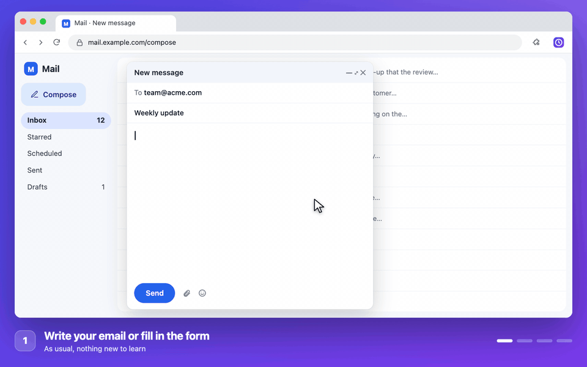

WhatsApp messages at the right time
Midnight birthday wishes, reminders and follow-ups, sent from WhatsApp Web. WhatsApp itself can't schedule on PC.
PressesSend
Write the message, fill the form, open the meeting. Submit Later clicks Send, Submit or Join for you at the second you choose — plus server-side tools for forms and webhooks. One account covers all three.
One account · three tools30 days of Pro freeNo card needed
Submit Later is a Chrome extension for computers. Open this page on your laptop or desktop to install it.

Works with
GmailWhatsApp WebGoogle FormsGoogle MeetZoomOutlookTeamsDiscordSlackLinkedInThe extension handles your browser. Two new server-side products work without Chrome — useful for teachers, developers and anyone who needs scheduling that can't be tampered with.
Press any button on any website at exactly the time you choose — from your browser. Emails, forms, meetings, WhatsApp.
Share the link now — students see a live countdown until your form opens, then it closes automatically. Google Forms handles close-time natively; we handle the open gate.
Schedule any HTTP request to fire from our servers — daily reports, cache invalidation, Slack reminders, cron-style triggers. No server required.
Two new products run from our servers — no browser tab needed, no machine left on, no CRON job to maintain.
Share the link before the exam starts. Students see a live countdown; the real Google Form URL stays hidden until the exact second you set. No more refreshing, no cheating the system.
Form opens in
The form becomes available on
Nov 1, 2026 at 10:00:00 AM IST
Fire any POST, GET or PUT to any URL — daily, weekly, on a custom interval or just once. Replaces keeping a server awake or hacking cron into a hosting plan.
If you can click a button, you can schedule it. There's nothing to configure and no code.
Write the email, the WhatsApp message or the form exactly as you normally would.
Click the Submit Later icon → Pick a button to schedule, then click Send, Submit or Join. It's only selected, not pressed.
A quick pick or any date and time, to the second. It's pressed on time and you're notified.

Deadlines, openings, meetings and messages that need to go out at exactly the right time.
WhatsApp can't schedule messages on PC. Submit Later can: write it now, and it's sent from WhatsApp Web at the exact minute, to one person or up to 20, with photos and videos too.
For buttons that need nothing typed, like Join, Register or Check in, Submit Later opens the page itself at the time and presses the button. Close the tab and forget about it.
Daily stand-ups, weekly reports, check-ins that reset at midnight. Set it once, and it keeps happening at the same time.
Action Flows chain as many steps as you need — log in, navigate pages, fill fields, check conditions, act on what the page says — and run the whole sequence on a schedule while you do other things.
Registration opens at 10:00, but the Register button stays grey for a few seconds? Submit Later keeps trying, and reloads the page if you ask, then presses it the moment it unlocks.
These are actual situations around the world where being one second too slow costs you the seat, the slot, or the ticket.
Sale opens at a pre-announced time (usually noon). Taylor Swift's Eras Tour sold out in 4 minutes; Coldplay Mumbai in under 5. Being at the page the instant it opens is the only real chance.
Drop time is announced 24 hours ahead. Entire stock of 500–2,000 pairs sells out in under 60 seconds. Resale prices hit 3–10× face value within the hour.
Lightning deals go live at a scheduled time and last 4–12 hours or until stock runs out — whichever comes first. Prime Day deals vanish in minutes. The timer is shown before the deal starts.
Slots released in small batches at unpredictable times. 150–300 day backlogs at US embassies worldwide mean a slot disappears within minutes. Affects applicants in every country.
Top Michelin-starred restaurants (Eleven Madison Park, Noma, Indian Accent) release tables at midnight or noon exactly 28–30 days out. They vanish in under 2 minutes.
AC Tatkal opens at exactly 10:00 AM one day before travel. Hundreds of thousands hit the server at the same second — seats on popular routes go in under a minute.
If it's a button on a web page, Submit Later can press it for you later. Here are a few ideas.
Midnight birthday wishes, reminders and follow-ups, sent from WhatsApp Web. WhatsApp itself can't schedule on PC.
Google Meet, Zoom or Teams: it reopens the meeting page and presses Join now, every weekday if you like.
Course enrolment, exam forms and event sign-ups. It waits for Register to unlock, reloading if needed, then presses it.
Discord has no schedule button. Type the message now and it goes out when your team or server is online.
Google Forms can't submit at a set time. Fill it in now and it's submitted exactly when you choose.
Write it tonight, send it at 9 AM from Gmail, Outlook or any webmail.
Join a class, webinar or livestream right as it starts, without watching the clock.
Press Check in or Claim on the same page every day, automatically.
Submit your weekly timesheet or report at 5 PM on Friday, even if you've already left.
Publish on LinkedIn, X, Facebook, Reddit or your blog when your audience is online.
Apply the moment a posting opens, or send your application at a good hour.
Send the Monday update, start the weekly export or post the weekly reminder, on repeat.
Press Call or Join in WhatsApp Web, Slack, Discord or Teams at the agreed time.
Start an export, publish a release or trigger a build at a quiet hour.
Enter the moment entries open, or submit right before the deadline.
Press Pay or Renew on the day it's due, with everything already filled in.
Good to know: Submit Later presses buttons you could press yourself. It can't solve CAPTCHAs or sign in for you, and it keeps Chrome running and your computer awake while something is scheduled. With Pro it can reopen the page itself, so the tab doesn't have to stay open.
A genuine mouse click, so Gmail, WhatsApp Web and modern web apps respond just like when you click.
While something is scheduled, your computer won't fall asleep and miss it. Free and Pro.
Signed out? Field empty? Page reloaded? You're warned while there's still time to fix it.
What you schedule stays on your computer. It only works on the sites you choose. No tracking, no ads.
Your account keeps only your name, email and plan. Read the full privacy policy.
Every new account gets 30 days of Pro free. No card, and nothing renews by itself.
Just $4 a month. Unlimited, plus WhatsApp, repeats and reopen & press.
Choose Pro AnnualPrices in INR, including all taxes. Compare plans in detail →
For buttons in a form you've filled in, yes, so what you typed is kept. With Pro's "Reopen & press", Submit Later opens the page itself at the time, so you can close the tab. Chrome needs to be running either way.
While something is scheduled, Submit Later keeps your computer awake (the screen can still turn off). Closing a laptop lid still puts it to sleep, so leave it open or plugged in with the lid up.
Yes. With Pro you can schedule WhatsApp Web messages to any number or imported contact, once or on repeat: to up to 20 people at a time, several messages each, with photos and videos up to 16 MB. Stay signed in to WhatsApp Web on that computer. Read more.
What you schedule (pages, buttons, messages) stays on your computer. Your account only stores your name, email and plan. See the privacy policy.
Submit Later tells you the result of each scheduled press with a Chrome notification, but your computer decides whether to show it. If you see nothing:
Mac: System Settings → Notifications → Google Chrome → turn on Allow notifications and choose Alerts (so they stay until you click). Turn off Focus / Do Not Disturb.
Windows 11: Settings → System → Notifications → turn on Notifications and Google Chrome, and turn off Do not disturb. Windows 10: Settings → System → Notifications & actions → turn on Google Chrome, and turn off Focus assist.
Chrome: keep Chrome open; notifications come from it. If you use several Chrome profiles, they show for the profile where Submit Later is installed.
You won't miss anything either way: every result is in the extension's popup under Last result.
It can't solve CAPTCHAs, sign in for you, or bypass a site's rules, and it won't send bulk messages. It presses buttons you could press yourself.
Set it once and get on with your day. Free forever, with 30 days of Pro to try everything.